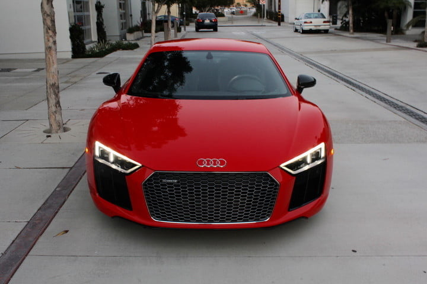
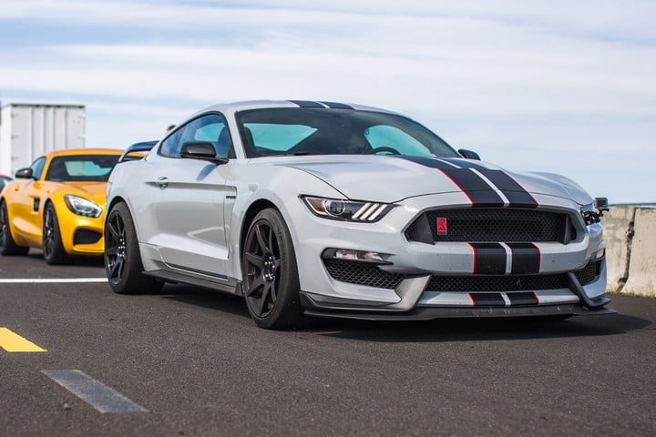
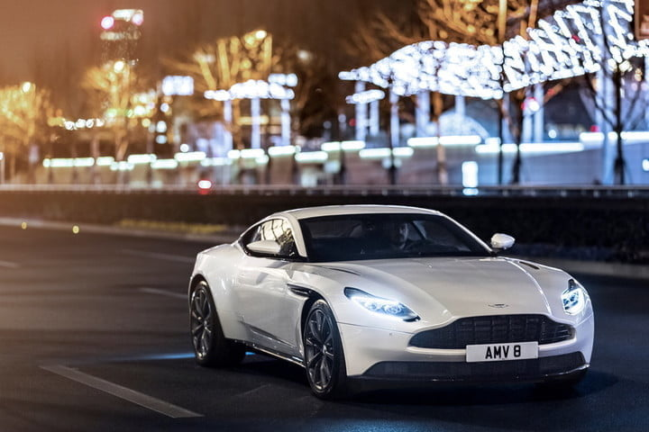
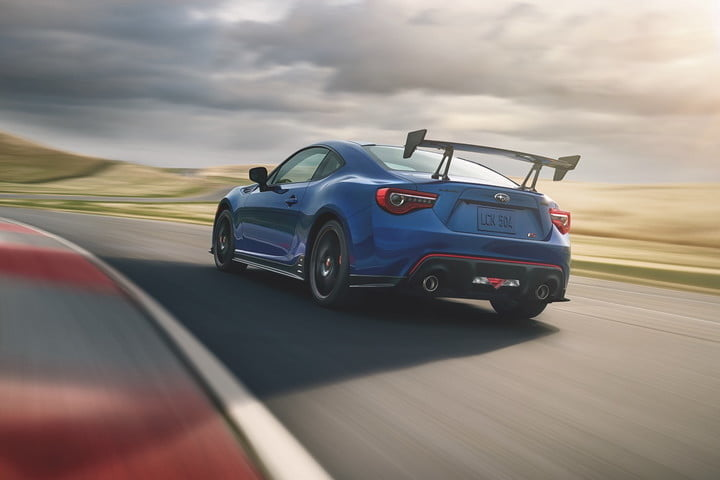
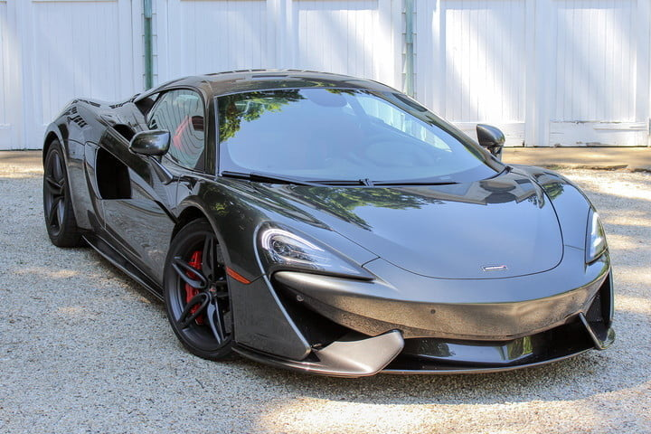
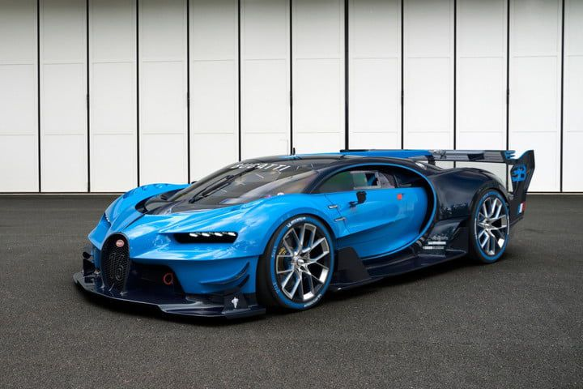

Este coupé de culata baja tiene pliegues afilados, acentos de fibra de carbono y diseño de motor medio para distinguirse de los carros deportivos menores, pero no llama la atención de la misma manera que sus rivales. Su motor V10 de 5.2 litros ofrece 610 caballos de fuerza y 413 libras-pie de torque a las cuatro ruedas a través de una transmisión de doble embrague de siete velocidades. Su aceleración es descomunal: de 0 a 60 mph en menos de 3.0 segundos, pudiendo alcanzar una velocidad máxima de 205 mph. Dentro de la cabina, los ocupantes reciben un magnífico sonido de motor y otras características de conveniencia líderes en su clase. La pantalla de Cockpit Virtual de 12.3 pulgadas de Audi ofrece a los conductores acceso a todas las funciones del vehículo. Su Drive Select ajusta la suspensión para transformar la calidad de conducción de suave a agresiva en un instante.
Si bien es cierto que los Shelbys de años anteriores deben su rendimiento a sus motores, el GT350 está sólo parcialmente definido por su tren motriz, lo que es aún más impresionante, si se tiene en cuenta que se trata de uno de los mejores que Ford ha construido jamás. Los ingenieros consiguieron arrancar 526 caballos de fuerza y 429 libras-pie de torque de un nuevo V8 de 5.2 litros. No hay aquí ninguna inducción forzada: solo el motor más potente y naturalmente aspirado (atmosférico) que Ford haya producido jamás, con una línea roja que marca 8,250 rpm. Más allá de su motor, el GT350R se diferencia del Mustang regular por una transmisión manual Tremec de 6 velocidades, diferencial de deslizamiento limitado Torsen, amortiguadores magnéticos Ford MagneRide, rotores de freno delantero de 15.5 pulgadas con pinzas Brembo de 6 pistones, discos traseros de 14.9 pulgadas con pinzas de 4 pistones y una altura de conducción reducida. La aerodinámica ayuda, además de que la fibra de carbono le ahorra algo de peso. Todo esto se suma para conseguir uno de los carros de pista más capaces.
El DB11 es el primer diseño “de hoja limpia” de Aston en más de una década, y eso se nota. Si bien todavía se parece a un Aston Martin —y tiene el rendimiento para respaldar su apariencia— se trata claramente de un automóvil del siglo XXI. Ya sea que elijas el propio V12 de 5.2 litros con turbocompresor de Aston, o el V8 de 4.0 litros twin-turbo de Mercedes-AMG, el DB11 tiene mucho músculo. El modelo V8 “de nivel de entrada” tiene 503 hp y 513 libras-pie. Aston dice que pasa de 0 a 60 mph en 4.0 segundos, y alcanza una velocidad máxima de 187 mph. Si eliges el V12, obtendrás 600 caballos y 516 libras-pie, disminuyendo el sprint en 0.1 segundos y alcanzando una velocidad máxima de 200 mph.
Aunque usan nombres diferentes, el Toyota 86 y el Subaru BRZ son esencialmente el mismo vehículo. Ambos ilustran el hecho de que los autos deportivos no son solo un asunto de velocidad en línea recta y de rendimiento que te dejan con tortícolis. El manejo también es parte de la experiencia. Si quieres una idea perfecta de cómo debería ser el manejo de un coupé deportivo con tracción trasera, no busques más que este dúo japonés. Son livianos, compactos, con tracción trasera y ofrecen una transmisión manual de seis velocidades. El resultado es un manejo nítido y equilibrado por $30,000. Usan el mismo motor de cuatro cilindros plano, que Subaru diseñó y ajustó a 205 caballos de fuerza y 156 libras-pie de torque. No ganarás muchas carreras de aceleración, pero el de cuatro cilindros está ansioso por acelerar y contribuye en gran medida a la experiencia de manejo. Hay otras cosas que mencionar. Si a menudo manejas largas distancias, los asientos de cubo te darán dolor de espalda. Busca otra alternativa si necesitas espacio; es un 2+2, no un verdadero cuatro plazas, lo que significa que los asientos traseros son solo para un uso ocasional. Sin embargo, los autos deportivos no son prácticos. Consigue un compañero, carga el equipo de fin de semana y dirígete a tu puerto de montaña favorito.
El McLaren 570S señala una marca de un rendimiento y estilo increíbles, sin tener que gastar tanto como comprar una casa en la playa. Con el lenguaje de diseño inspirado en el P1, el 570S es un magnífico tributo al arte británico. Sus líneas —por supuesto— se traducen en eficiencia aerodinámica. Las ondas del cuerpo de este automóvil deportivo ayudan a que su motor medio de 3.8 litros con turbocompresor envíe su potencia a las ruedas traseras. Tiene 562 caballos de fuerza y 443 libras-pie de torque lo ayudan a pasar de 0 a 60 mph en 3.1 segundos, alcanzando una velocidad máxima de 204 mph. Su conducción no es menos asombrosa. Cuenta con suspensión de doble horquilla oscilante y antivuelco, con un sistema de amortiguación adaptativo rápido, y unos neumáticos Pirelli PZero Corsa que controlan todo el movimiento del cuerpo. Para mantener el rendimiento, el control electrónico de estabilidad diseñado por Bosch puede pasar de invasivo a latente, mientras que un sistema de par motor ubicado en los frenos aplica potencia a las ruedas con mayor agarre. El coupé McLaren Sport Series tiene un precio en el territorio del Audi R8 V10 Plus y el Lamborghini Huracan LP 580-2. Su rendimiento y estilo están entre los mejores de su segmento, pero los conductores diarios pueden preferir dar un lujoso paseo en el Audi.
El Bugatti Chiron es un vehículo evolucionario, más avanzado en todos sus aspectos que su antecesor, pero sin ser emplear tecnologías híbridas o una construcción revolucionaria. Cuenta con un impresionante motor W16 de 8 litros en posición central, con 1500 CV, que le permite hacer el 0-100 km/h en menos de 2,5 segundos y alcanzar una velocidad máxima de 420 km/h. El precio del Bugatti Chiron es de 2,4 millones de euros. El Bugatti Chiron no es una evolución del Veyron. Aunque emplea una evolución de su motor 8.0 W16, es un coche completamente nuevo, y al igual que su predecesor, establece un sólido dominio técnico sobre sus rivales. Su chasis monocasco de fibra de carbono es tan rígido como el de un LMP1 de Le Mans. Su propulsor 8.0 W16 emplea un nuevo sistema de turboalimentación twin-scroll por partida cuádruple: el actuador eléctrico de sus turbos desata la potencia completa del sistema bajo una aceleración intensa. A un ritmo normal, sólo estaremos usando dos de los cuatro turbocompresores. Posee un nuevo sistema de escape, gestión electrónica y admisión de fibra de carbono. Desarrolla 1.500 CV a 6.700 rpm, acompañados de un demoledor par máximo de 1.600 Nm entre las 2.000 rpm y las 6.000 rpm. La potencia pasa a las cuatro ruedas mediante una caja de cambios DSG de doble embrague y siete relaciones. Bugatti se ha asociado con Michelin para el desarrollo de los neumáticos del Chiron. Su compuesto especial es capaz de soportar puntas superiores a los 400 km/h, con unas medidas 355/25 R21 para el eje trasero y 285/30 R20 para el eje delantero.
